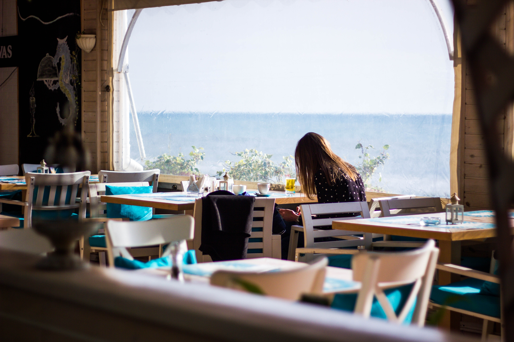

Founder Tzurit Or started Death By Caffeine Bakery & Café in 2007, baking 20 hours a day in her home
kitchen
and selling her delicious creations to Boston farmers’ markets. After only one summer, Death By Caffeine
expanded to its first brick-and-mortar bakery in Brookline, Massachusetts.
When she opened her very first location she wanted it to feel welcoming, as if someone was hugging you,
a home away from home. She has since opened ten Death By Caffeine cafes but the aim has always remained the
same; each cafe has its own individual sense of identity, feel and style but they all stay true to the
original spirit – to what Death By Caffeine is all about.
Our mission is to inspire and touch every person, neighborhood and city with our experience and
through our food, our passion, and our culture. Tzurit would like to bring Death By Caffeine to as many
markets possible, to share that unique experience, the food, the pastries and the atmosphere that Death By
Caffeine
brings to every location they open.
